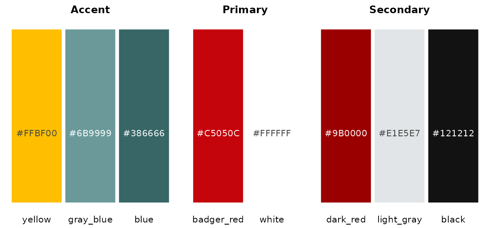
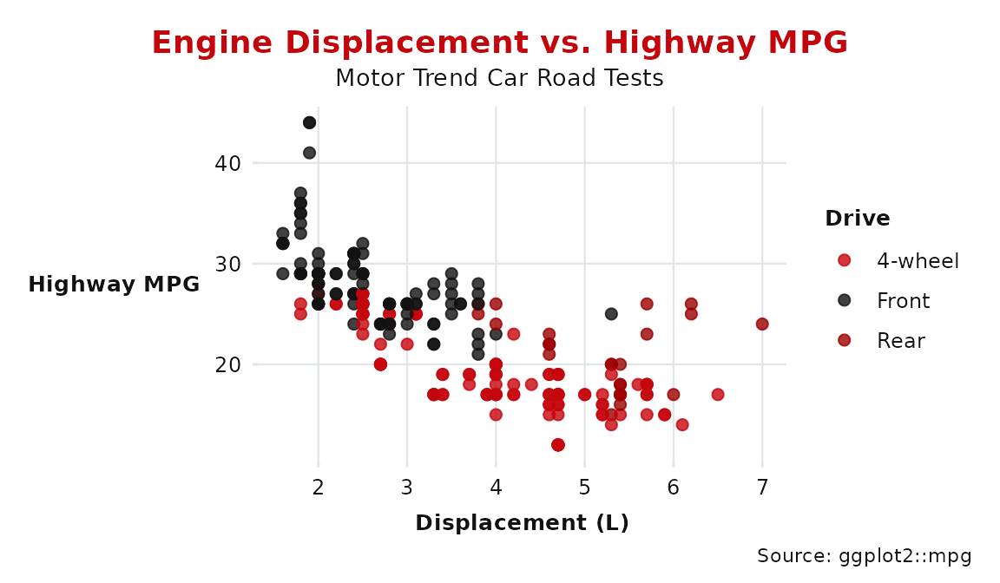
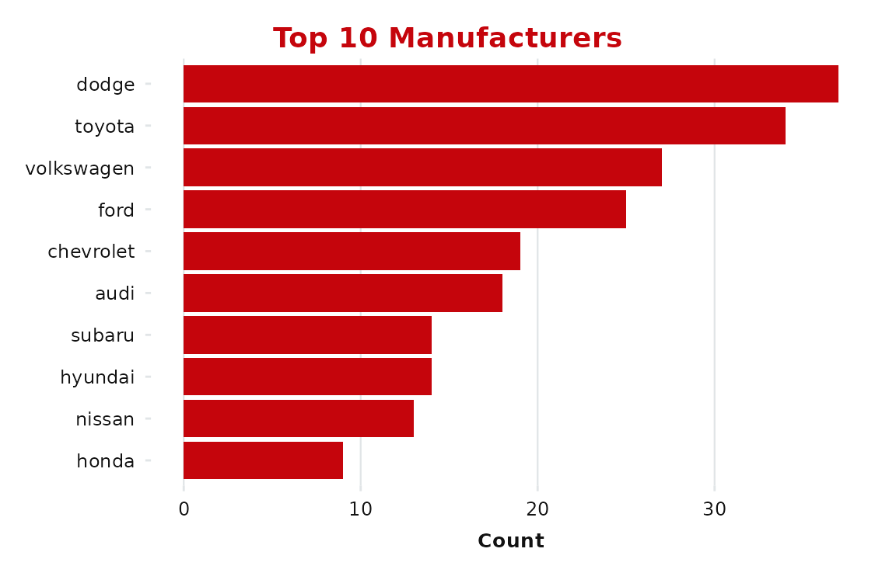
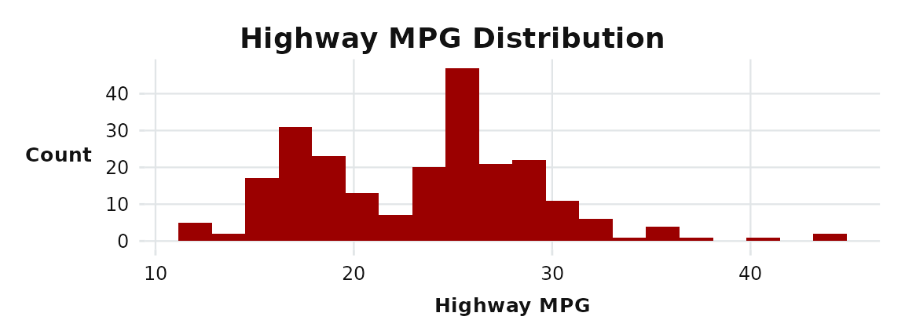
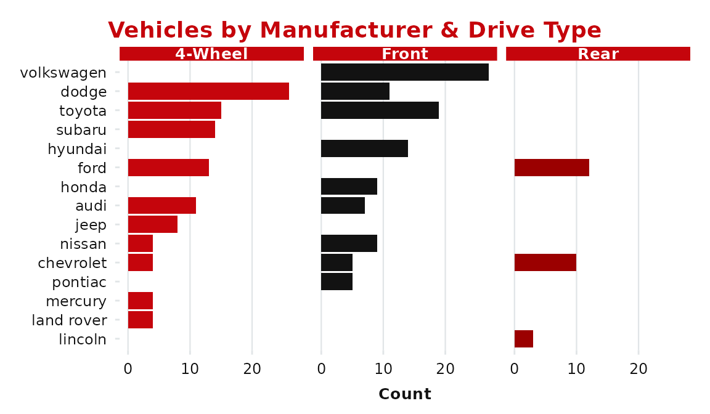
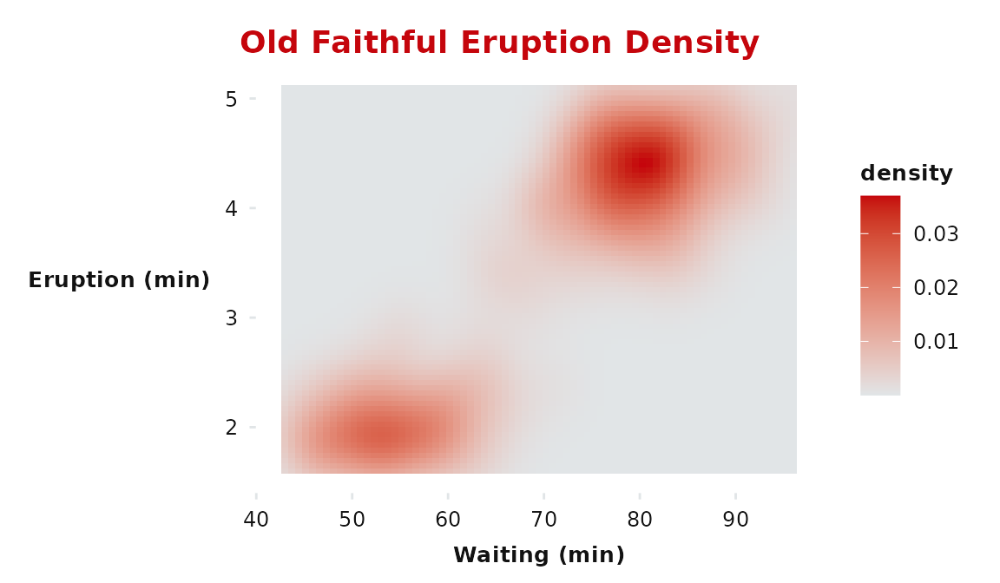
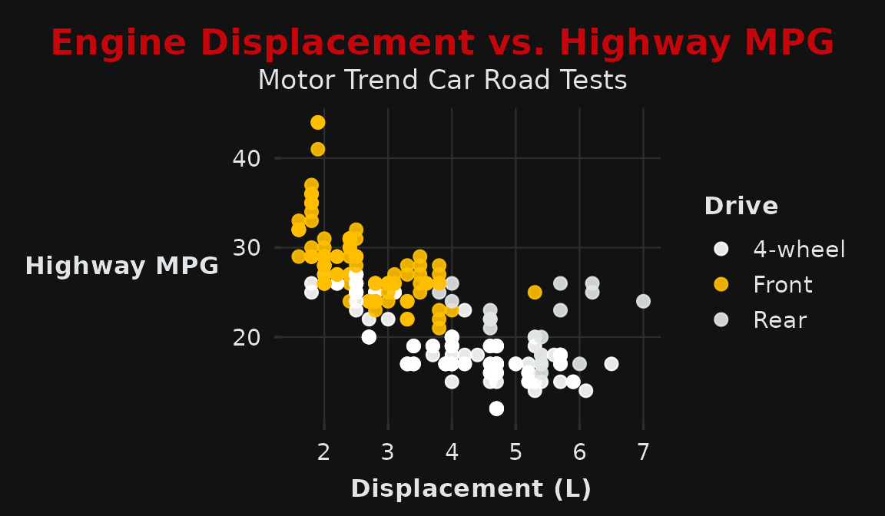
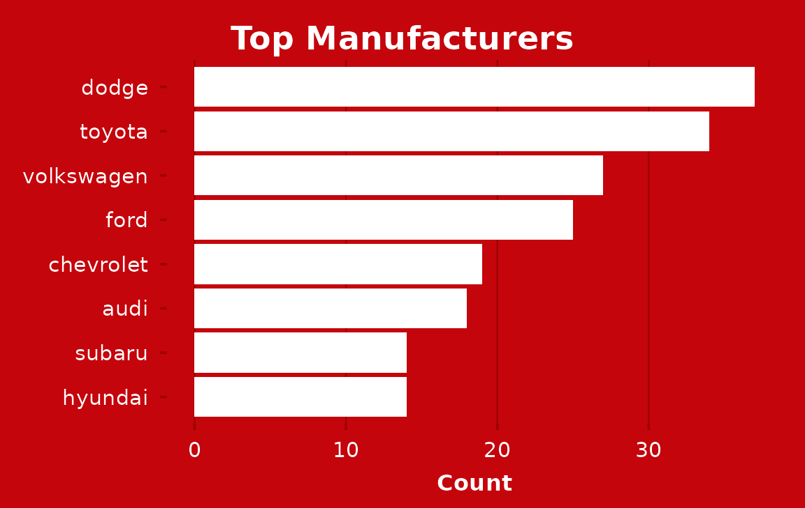
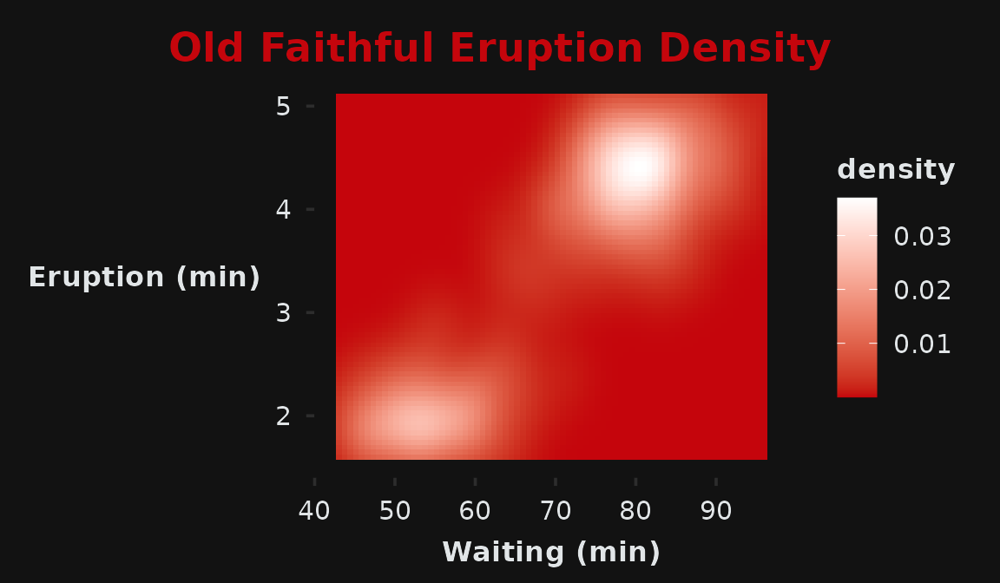

The uwbranding package provides ggplot2 themes, color palettes, and Quarto document templates that conform to the UW–Madison brand identity.
library(uwbranding)
#> uwbranding: UW–Madison brand identity for R and Quarto.
#> Fonts required: Crimson Pro, Red Hat Display, Red Hat Text
#> Download: https://brand.wisc.edu/visual-identity/typography/
library(ggplot2)
library(dplyr)
#>
#> Attaching package: 'dplyr'
#> The following objects are masked from 'package:stats':
#>
#> filter, lag
#> The following objects are masked from 'package:base':
#>
#> intersect, setdiff, setequal, unionNote on fonts. The brand themes use Crimson Pro, Red Hat Display, and Red Hat Text. If these aren’t installed as system fonts, ggplot2 will fall back to its default — the themes will still work, but typography won’t match the brand. Download links are at https://brand.wisc.edu/visual-identity/typography/.
Brand colors
All official colors are in the named vector uw_colors.
Use uw_color() to retrieve specific values by name.
uw_colors
#> badger_red white dark_red light_gray black yellow gray_blue
#> "#C5050C" "#FFFFFF" "#9B0000" "#E1E5E7" "#121212" "#FFBF00" "#6B9999"
#> blue
#> "#386666"
uw_color("badger_red")
#> badger_red
#> "#C5050C"
uw_color("badger_red", "dark_red", "light_gray")
#> badger_red dark_red light_gray
#> "#C5050C" "#9B0000" "#E1E5E7"Here they are at a glance:

Light theme
theme_uw() is the default theme for PDF documents and
light-background slides. It pairs Badger Red headings with a clean white
panel.
ggplot(mpg, aes(x = displ, y = hwy, color = drv)) +
geom_point(size = 2, alpha = 0.8) +
scale_color_uw(labels = c("4-wheel", "Front", "Rear")) +
labs(
title = "Engine Displacement vs. Highway MPG",
subtitle = "Motor Trend Car Road Tests",
x = "Displacement (L)",
y = "Highway MPG",
color = "Drive",
caption = "Source: ggplot2::mpg"
) +
theme_uw()
The grid argument controls which gridlines are shown
("both", "x", "y",
"none"). For bar charts, grid = "x" is usually
cleaner.
mpg |>
count(manufacturer) |>
slice_max(n, n = 10) |>
ggplot(aes(x = n, y = reorder(manufacturer, n))) +
geom_col(fill = uw_color("badger_red")) +
labs(title = "Top 10 Manufacturers", x = "Count", y = NULL) +
theme_uw(grid = "x")
title_color accepts any color name from
uw_colors or a raw hex string — useful when Badger Red
doesn’t contrast enough against your content:
ggplot(mpg, aes(x = hwy)) +
geom_histogram(fill = uw_color("dark_red"), bins = 20) +
labs(title = "Highway MPG Distribution", x = "Highway MPG", y = "Count") +
theme_uw(title_color = "black")
Color scales
Discrete (light)
scale_color_uw() and scale_fill_uw() apply
[uw_palette_discrete] — ordered for visibility on white:
mpg |>
count(manufacturer, drv) |>
ggplot(aes(x = n, y = reorder(manufacturer, n), fill = drv)) +
geom_col() +
scale_fill_uw(labels = c("4-wheel", "Front", "Rear")) +
facet_wrap(~drv, labeller = as_labeller(
c(`4` = "4-Wheel", f = "Front", r = "Rear")
)) +
labs(title = "Vehicles by Manufacturer & Drive Type",
x = "Count", y = NULL) +
theme_uw(grid = "x") +
theme(legend.position = "none")
Continuous (light)
scale_fill_uw_c() and scale_color_uw_c()
run from UW Light Gray to Badger Red:
ggplot(faithfuld, aes(waiting, eruptions, fill = density)) +
geom_tile() +
scale_fill_uw_c() +
labs(title = "Old Faithful Eruption Density",
x = "Waiting (min)", y = "Eruption (min)") +
theme_uw(grid = "none")
Dark theme
theme_uw_dark() is designed for slides and poster
panels. Two styles are available via the style
argument.
style = "black" (default)
Near-black background (#121212) with a Badger Red title
— the most versatile dark option.
ggplot(mpg, aes(x = displ, y = hwy, color = drv)) +
geom_point(size = 2.5, alpha = 0.9) +
scale_color_uw_dark(labels = c("4-wheel", "Front", "Rear")) +
labs(
title = "Engine Displacement vs. Highway MPG",
subtitle = "Motor Trend Car Road Tests",
x = "Displacement (L)",
y = "Highway MPG",
color = "Drive"
) +
theme_uw_dark()
style = "red"
Badger Red background (#C5050C) with white text —
high-impact title slides and poster headers.
mpg |>
count(manufacturer) |>
slice_max(n, n = 8) |>
ggplot(aes(x = n, y = reorder(manufacturer, n))) +
geom_col(fill = "white") +
labs(title = "Top Manufacturers", x = "Count", y = NULL) +
theme_uw_dark(style = "red", grid = "x")
Continuous (dark)
scale_fill_uw_dark_c() runs Badger Red → White, suited
to dark panels:
ggplot(faithfuld, aes(waiting, eruptions, fill = density)) +
geom_tile() +
scale_fill_uw_dark_c() +
labs(title = "Old Faithful Eruption Density",
x = "Waiting (min)", y = "Eruption (min)") +
theme_uw_dark(grid = "none")
Quarto templates
use_uw_pdf(), use_uw_revealjs(), and
use_uw_beamer() copy starter templates into any project
directory. Run them once per project, then render normally with
quarto render.
# PDF document (copies uw-brand.tex, _quarto.yml, template.qmd)
use_uw_pdf()
# RevealJS presentation (copies _uw-light.scss, _uw-dark.scss, template.qmd)
use_uw_revealjs()
# Beamer/PDF presentation (copies _uw-beamer-preamble.tex, title.tex, template.qmd)
use_uw_beamer()
# All three default to getwd(). Use path = to target a subdirectory.
use_uw_revealjs(path = "slides")
# Use overwrite = TRUE to refresh files from the package.
use_uw_pdf(overwrite = TRUE)File inventory
| Function | Files copied |
|---|---|
use_uw_pdf() |
uw-brand.tex, _quarto.yml,
template.qmd
|
use_uw_revealjs() |
_uw-light.scss, _uw-dark.scss,
template.qmd
|
use_uw_beamer() |
_uw-beamer-preamble.tex, title.tex,
template.qmd
|
Switching light ↔︎ dark
The light and dark versions of each format are designed to be toggled with minimal changes.
RevealJS
In the YAML front matter, swap the theme line:
In the setup chunk, match the plot theme:
theme_set(theme_uw(base_size = 14)) # light
theme_set(theme_uw_dark(base_size = 14)) # darkBeamer
In _uw-beamer-preamble.tex, flip one line:
Match the plot theme in the setup chunk (use
base_size = 9 for Beamer):
theme_set(theme_uw(base_size = 9)) # light
theme_set(theme_uw_dark(base_size = 9)) # darkConsistent plot theming across a document
Set the theme once in a setup chunk so all subsequent plots inherit it:
library(uwbranding)
theme_set(theme_uw()) # or theme_uw_dark()Individual plots can still override with
+ theme_uw_dark(style = "red") etc.